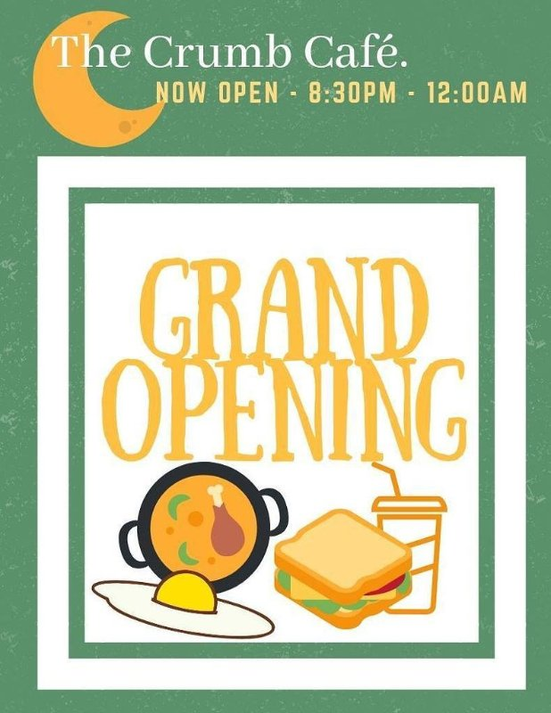

I started the Crumb Cafe in 2018 with my team of directors from Paces Cafe. The Crumb Cafe is a student run cafe that operates out of Sharples Dining Hall at Swarthmore College after their dining services end at 8pm. As the Director of Food Services, I interviewed, hired, trained, and now manage a team of over 70 dishwashers, barbacks, baristas, short orders, and managers. On a nightly basis, I oversee and manage all facets of the cafe to ensure that everything is running smoothly, from the industrial kitchen in the back all the way to the front where the manager and baristas operate in our cafe. I worked extensively with the produce manager and dining staff at Sharples Dining Hall to create a menu and recipe book that is catered to demand from students as well as supply from food vendors. Since I joined the director team at Crumb, our revenue has increased over 10 fold and we continue to grow as we strive to meet the demand of our customers.
In 2018, I led the transformation of Paces Cafe into the Crumb Cafe. The Crumb Cafe is a student run cafe that operates 7 nights a week out of Sharples Dining Hall at Swarthmore College after their dining services end at 8pm.
-- Read more about Crumb Cafe here --